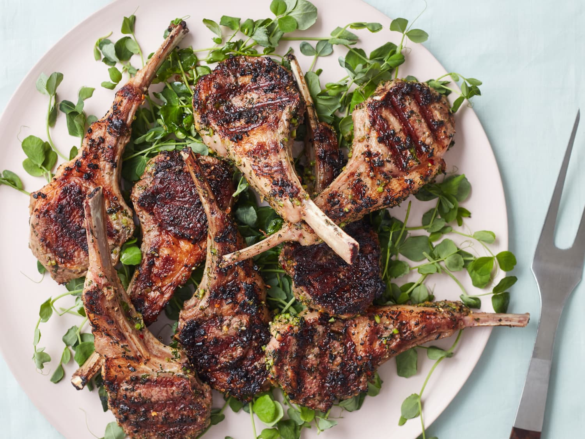

Grilled Lamb Chops


 Lamb chpos 150g
Lamb chpos 150g
 olive oil 1 tablespoon
olive oil 1 tablespoon
 Garlic 2cloves
Garlic 2cloves
 Dried rosemery 1 teaspoon
Dried rosemery 1 teaspoon
 Dried thyme 1/2 teaspoon
Dried thyme 1/2 teaspoon
Serving Size: 1
Servings Per Recipe: 1
Serving Size: 1 cup
Calories: 400 kcal
| Nutrient | Amount | % Daily Value * | Total Carbohydrate | 0g |
|---|---|---|
| Dietary Fiber | 2g | 70-80% |
| Protein | 30g | 24% |
| Total Fat | 31g | 45% |
| Total Sugars | 4g | 0-0.5% |
| Saturated Fat | 12g | 45% |
| trans Fat | 0.5g | |
| cholestrol | 105mg | 103% |
| sodium | 80mg | 5-7 |
| Vitamin C | 2% | |
| Calcium | 2% | |
| Iron | 10% | |
| potassium | 280mg | 8% |